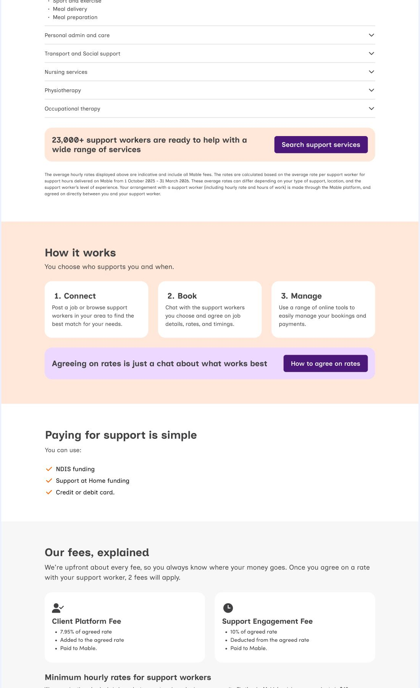
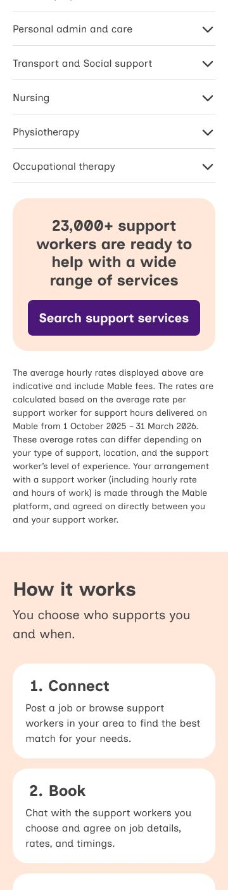
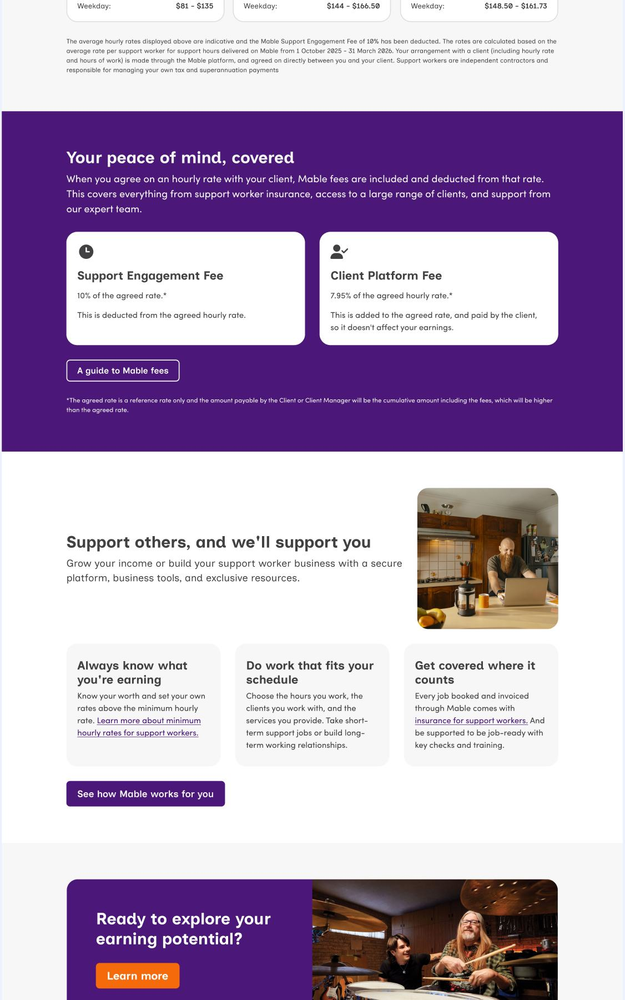
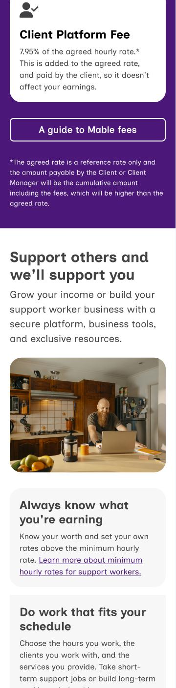
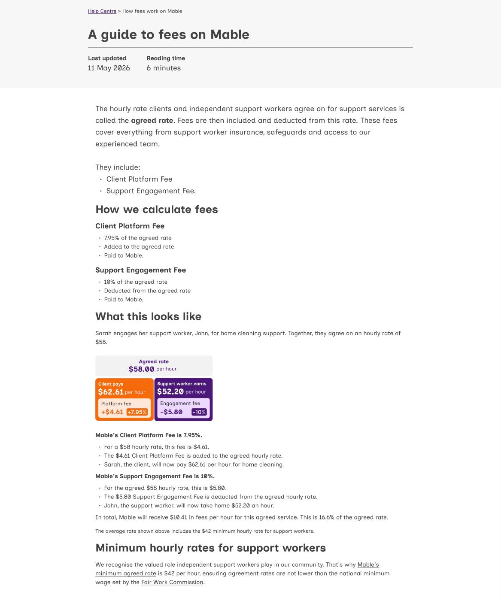

The original problem
A heavily visited, fee-first pricing page tried to answer different questions for clients, families and support workers. Behavioural analysis indicated substantial paid-search traffic, shallow engagement and pronounced mobile friction. Visitors were seeking concrete cost or earnings answers rather than fee mechanics.
The original analysis also found shallow scrolling, high exits and a recurring route from pricing to the worker signup journey. These signals shaped the hypothesis; they did not by themselves prove causation.
Evidence before design
Moderated sessions explored where clients struggled with the old page. An unmoderated follow-up tested finding and understanding pricing on the new pages with clients and support workers.
Clients wanted meaningful rate examples and context about affordability. Workers responded to concrete take-home earnings and useful qualification guidance. Both groups struggled with fee mechanics that appeared before the answer they were seeking.
One page became three
We separated the experience into a client pricing page, a support-worker earnings page and a help-centre fees guide. The main pages led with average rates and clear audience-specific questions; detailed fee calculations moved into supporting content.
Client pricing




Support worker pricing




Help centre fees guide


Design excerpts from the project. Select a screen to view it at full size. Rates and fees shown are historical.
Test, learn, iterate
A multi-week redirect A/B test compared the original page with the split experience. Interim behaviour and heatmaps prompted a clearer signup CTA, more prominent rates detail, and reordered funding and fees content.
The variation produced a meaningful relative improvement in worker signup starts. Pricing content also accounted for a substantially greater share of signup CTA clicks, without increasing overall click volume. Client signups did not show a clear overall uplift; desktop performed better than mobile.
What happened after launch
Post-launch analytics indicated that the new client pricing page performed above the average of other high-traffic landing pages for signup starts. Visitors also engaged with the service-rates detail during testing.
The worker page attracted comparatively little traffic despite a high signup-CTA click rate. Mobile remained a gap, and some tested earnings copy was not retained in the live implementation.
Next opportunity: bring contextual cost answers into high-intent journeys, protect proven copy during QA and establish a like-for-like before/after baseline.